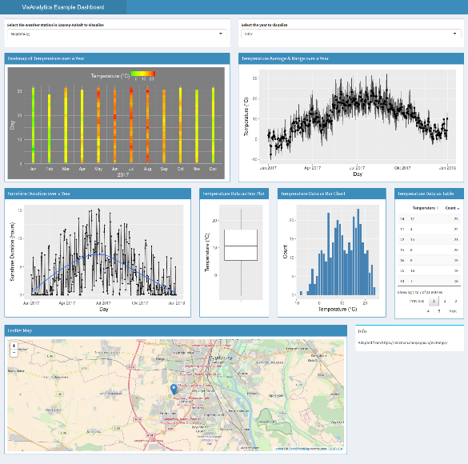

In this post, we will systematically and reproducibly download weather data from the German Meteorologica Service (Deutscher Wetterdienst) website. Our goal is to gather historical temperature recordings from all available weather stations of my home state Saxony-Anhalt. The data is used in this R Shiny App that serves as introductory demo for the course Visual Analytics which I teach at the University of Magdeburg.
We can access historical and recent weather data from the German Meterologica Service from their dedicated ftp server.
The files are organized in a folder structure where each weather station has its own zip folder containing the raw measurements.
First, we load all required libraries. Then, we browse to the subfolder observations_germany/climate/daily/kl/recent/ to examine a text file that contains meta information for each weather station, i. e., its ID, location, height, longitude & latitude, and the German state (Bundesland) where its located. Unfortunately, the file columns are rather awkwardly delimited (no csv style or similar) which means that we have to painfully parse each line by exact character positions.
library(stringr)
library(dplyr)
library(readr)
library(tidyr)
library(purrr)
library(rvest)
library(lubridate)
url_station_description <- "ftp://ftp-cdc.dwd.de/pub/CDC/observations_germany/climate/daily/kl/recent/KL_Tageswerte_Beschreibung_Stationen.txt"
df_description <- tibble(full = readLines(url_station_description))
tidy_df_description <- df_description %>%
slice(-c(1:2)) %>%
mutate(station_id = str_sub(full, 1,5)) %>%
mutate(von_datum = str_sub(full, 6,14)) %>%
mutate(bis_datum = str_sub(full, 15, 23)) %>%
mutate(stationshoehe = str_sub(full, 24, 39)) %>%
mutate(geo_breite = str_sub(full, 40, 52)) %>%
mutate(geo_laenge = str_sub(full, 53, 60)) %>%
mutate(station_name = str_sub(full, 61, 102)) %>%
mutate(bundesland = str_sub(full, 103, 130)) %>%
select(-full) %>%
map_dfc(str_trim) %>%
mutate(station_id = as.integer(station_id)) %>%
mutate(geo_breite = as.double(geo_breite)) %>%
mutate(geo_laenge = as.double(geo_laenge))
# Filter stations located in my beloved home state ;-)
df_st <- tidy_df_description %>% filter(bundesland == "Sachsen-Anhalt")
df_st## # A tibble: 53 x 8
## station_id von_datum bis_datum stationshoehe geo_breite geo_laenge
## <int> <chr> <chr> <chr> <dbl> <dbl>
## 1 184 19470101 19660630 55 52.6769 12.0077
## 2 207 19470101 19641231 105 51.7498 11.4667
## 3 445 18980101 20180129 84 51.8218 11.7109
## 4 524 19470101 19921231 80 51.6333 12.3167
## 5 722 19380101 20180129 1134 51.7986 10.6183
## 6 948 19470101 19501231 60 51.8512 12.2515
## 7 1052 19930501 20180129 80 52.2174 12.1641
## 8 1074 19470401 19730228 103 51.3043 12.0810
## 9 1182 19470101 20010531 146 51.5029 11.5705
## 10 1488 19470101 19721231 523 51.6884 11.0394
## # ... with 43 more rows, and 2 more variables: station_name <chr>,
## # bundesland <chr>We see that there are 53 regional weather stations. However, the bis_datum variable shows that some of them were discontinued. How many weather stations are still currently active?
df_st %>% filter(str_sub(bis_datum, 1, 4) == as.character(year(now()))) %>% nrow()## [1] 25Historical and recent temperature recordings are stored in separate folders. Therefore, we crawl each subfolder, compile a list of all hyperlinks pointing to the corresponding zip files of the stations’ raw temperature measurements and extract the station ID which is part of the hyperlink. Remember that we are only interested in Saxony-Anhalt’s weather stations, so we retain only those links that include the IDs of regional stations.
url_files <- "ftp://ftp-cdc.dwd.de/pub/CDC/observations_germany/climate/daily/kl/"
files_dwd <- tibble(file = read_html(str_c(url_files, "historical/")) %>%
html_text() %>%
str_extract_all("tageswerte_KL_\\d{5}_\\d{8}_\\d{8}_hist\\.zip") %>%
unlist()) %>%
bind_rows(
tibble(file = read_html(str_c(url_files, "recent/")) %>% rvest::html_text() %>%
str_extract_all("tageswerte_KL_\\d{5}_akt\\.zip") %>% unlist())
) %>%
mutate(station_id = as.integer(str_sub(file, 15, 19))) %>%
filter(station_id %in% df_st$station_id) %>%
mutate(complete_url = str_c(url_files, ifelse(str_detect(file, "hist"), "historical/", "recent/"), file))
head(files_dwd, 3) %>% as.data.frame()## file station_id
## 1 tageswerte_KL_00184_19470101_19660630_hist.zip 184
## 2 tageswerte_KL_00207_19470101_19641231_hist.zip 207
## 3 tageswerte_KL_00445_18980101_20161231_hist.zip 445
## complete_url
## 1 ftp://ftp-cdc.dwd.de/pub/CDC/observations_germany/climate/daily/kl/historical/tageswerte_KL_00184_19470101_19660630_hist.zip
## 2 ftp://ftp-cdc.dwd.de/pub/CDC/observations_germany/climate/daily/kl/historical/tageswerte_KL_00207_19470101_19641231_hist.zip
## 3 ftp://ftp-cdc.dwd.de/pub/CDC/observations_germany/climate/daily/kl/historical/tageswerte_KL_00445_18980101_20161231_hist.zipNext, we will download the zip files. We create a temporary local folder and download all zip files. We extract the archives into a separate folder, iteratively load the relevant files (only those containing the substring “produkt”), rowwise combine them, and finally delete the temporary folders and their contents.
# Download files
if(!file.exists("zip_files")) {dir.create("zip_files/")}
walk(1:nrow(files_dwd), ~ download.file(files_dwd$complete_url[.x], destfile = str_c("zip_files/", files_dwd$file[.x])))
# Unzip all containers into a new directory.
if(!file.exists("zip_files_unzipped")) {dir.create("zip_files_unzipped/")}
list.files("zip_files", full.names = TRUE) %>% walk(~ unzip(.x, exdir = str_c(getwd(), "/zip_files_unzipped")))
# We read all ';'-separated files that contain the temperature data, rowwise combine them and
# apply an inner join with the meta data from above
# to have also the name of the station and its geoposition available.
temperature_data_st <- list.files("zip_files_unzipped", full.names = TRUE, pattern = "^produkt") %>%
map_dfr(~read_delim(.x, delim = ";", trim_ws = TRUE, na = "-999", col_types = c("iicddcdcddddddddddc"))) %>%
inner_join(df_st %>% select(STATIONS_ID = station_id, geo_breite, geo_laenge, station_name), by = "STATIONS_ID")
# Remove temporary folders and files.
unlink("zip_files", recursive = TRUE)
unlink("zip_files_unzipped", recursive = TRUE)
# Select relevant variables
temperature_data_st <- temperature_data_st %>%
select(STATIONS_ID, # station id
station_name, # station name
MESS_DATUM, # measuring date
RSK, # daily precipitation depth
SDK, # daily sunshine hours
PM, # avg. air pressure
TMK, # avg. temperature
UPM, # avg. humidity
TXK, # max. temperature at 2m
TNK, # min. temperature at 2m
TGK, # min. temperature at 5cm,
geo_breite, # latitude of station position
geo_laenge # longitude of station position
)
temperature_data_st## # A tibble: 679,141 x 13
## STATIONS_ID station_name MESS_DATUM RSK SDK PM TMK UPM
## <int> <chr> <int> <dbl> <dbl> <dbl> <dbl> <dbl>
## 1 1960 Halle (Stadt) 18510101 0.0 NA 1005.9 7.5 87
## 2 1960 Halle (Stadt) 18510102 0.0 NA 1008.1 6.2 83
## 3 1960 Halle (Stadt) 18510103 0.0 NA 1009.4 4.0 80
## 4 1960 Halle (Stadt) 18510104 0.3 NA 1005.3 4.3 87
## 5 1960 Halle (Stadt) 18510105 0.0 NA 999.6 1.7 94
## 6 1960 Halle (Stadt) 18510106 0.0 NA 994.7 2.3 90
## 7 1960 Halle (Stadt) 18510107 1.4 NA 996.1 1.5 86
## 8 1960 Halle (Stadt) 18510108 5.0 NA 997.4 3.6 95
## 9 1960 Halle (Stadt) 18510109 0.0 NA 1004.4 4.0 92
## 10 1960 Halle (Stadt) 18510110 0.0 NA 1015.8 3.0 89
## # ... with 679,131 more rows, and 5 more variables: TXK <dbl>, TNK <dbl>,
## # TGK <dbl>, geo_breite <dbl>, geo_laenge <dbl>As mentioned in the beginning, the data are visualized in this small R Shiny app.

sessionInfo()## R version 3.4.1 (2017-06-30)
## Platform: x86_64-w64-mingw32/x64 (64-bit)
## Running under: Windows 10 x64 (build 16299)
##
## Matrix products: default
##
## locale:
## [1] LC_COLLATE=German_Germany.1252 LC_CTYPE=German_Germany.1252
## [3] LC_MONETARY=German_Germany.1252 LC_NUMERIC=C
## [5] LC_TIME=German_Germany.1252
##
## attached base packages:
## [1] methods stats graphics grDevices utils datasets base
##
## other attached packages:
## [1] bindrcpp_0.2 lubridate_1.7.1 rvest_0.3.2 xml2_1.1.1
## [5] purrr_0.2.4 tidyr_0.7.2 readr_1.1.1 dplyr_0.7.4
## [9] stringr_1.2.0 blogdown_0.3
##
## loaded via a namespace (and not attached):
## [1] Rcpp_0.12.14 knitr_1.18 bindr_0.1 magrittr_1.5
## [5] hms_0.3 R6_2.2.2 rlang_0.1.4 httr_1.3.1
## [9] tools_3.4.1 png_0.1-7 htmltools_0.3.6 yaml_2.1.14
## [13] rprojroot_1.2 digest_0.6.14 assertthat_0.2.0 tibble_1.3.4
## [17] bookdown_0.5 curl_3.0 glue_1.1.1 evaluate_0.10.1
## [21] rmarkdown_1.8 stringi_1.1.6 compiler_3.4.1 backports_1.1.1
## [25] pkgconfig_2.0.1